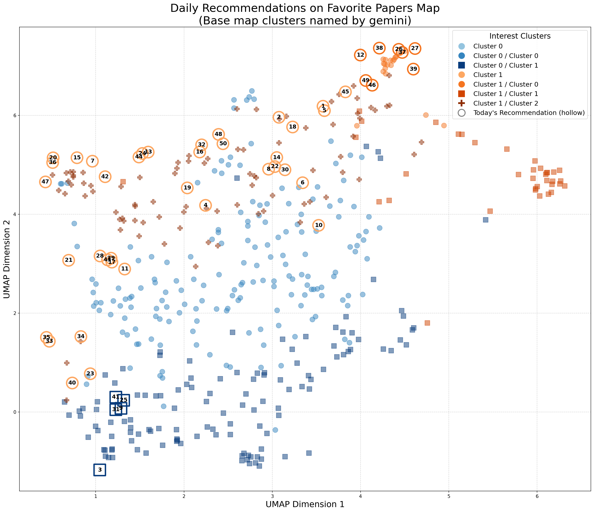

Analysis of Your Favorites
Interest Word Cloud

Interest Clusters

TLDR: Using improved statistical modeling of Cepheid variable stars and anchor distances, a revised Hubble constant ($H_0 = 71.7 \pm 1.3\,\mathrm{km}\,\mathrm{s}^{-1}\,\mathrm{Mpc}^{-1}$) is derived, which remains in tension with the value from the cosmic microwave background.
TLDR: A novel cosmological reconstruction technique, applied to the void galaxy cross-correlation function, improves the precision of cosmological parameter estimation by 23% by mitigating redshift-space distortions and incorporating previously unusable small-scale voids.
TLDR: Field-level inference accurately recovers cosmological parameters from mock data with Gaussian noise, achieving comparable accuracy to power spectrum/bispectrum analyses, but is highly sensitive to accurate likelihood modeling.
TLDR: Using the IllustrisTNG simulation and JWST observations, this study investigates the impact of galaxy mergers and their environment on star formation rates and metallicity across cosmic time, highlighting discrepancies between simulation and observation.
TLDR: The study identifies and quantifies systematic errors in fast gravitational waveform models for Extreme Mass-Ratio Inspirals, finding that high-order multipolar expansions ($\ell_{\text{max}} \geq 30$) and efficient Chebyshev interpolation are crucial for accurate parameter estimation in strong-field Kerr spacetimes.
TLDR: A novel re-parameterization method effectively mitigates projection effects in full-shape power spectrum analyses, yielding consistent cosmological parameter estimates in analyses of BOSS DR12 and DESI DR1 data, suggesting its importance for future large-scale structure surveys.
TLDR: Using two cosmological simulations, this study investigates galaxy quenching mechanisms across cosmic time, finding that supermassive black hole mass best predicts quiescence in central and high-mass satellite galaxies, while group halo mass is the best predictor for low-mass satellites, with significant discrepancies between simulations highlighting the need for future observational data from VLT-MOONRISE to refine models.
TLDR: Using supernovae, baryon acoustic oscillations, and cosmic microwave background data, the study finds strong evidence (at >3σ confidence) for a variable speed of light in a Brans-Dicke-like framework, but this result is shown to be highly sensitive to the Hubble constant's value.
TLDR: A new Bayesian analysis decomposes the Hubble tension, revealing that approximately 78% of the observed discrepancy is attributable to a genuine physical tension, strongly suggesting the need for physics beyond the standard cosmological model.
TLDR: Analysis of a coupled dark energy-dark matter model using cosmological data favors a warm dark matter component, but Bayesian evidence ultimately supports the standard $\Lambda$CDM model.
TLDR: Quasinormal modes of magnetically charged black holes in a quintessence field are investigated using numerical methods, revealing that magnetic charge lowers oscillation frequency and quintessence modifies damping timescales.
TLDR: A model-independent test of the cosmic distance duality relation using Bézier polynomials and various datasets finds no significant violation and favors Planck's value of the Hubble constant.
TLDR: Analysis of correlations between the reionization optical depth and cosmological anomalies reveals weak intrinsic relationships, suggesting that the alleviation of tensions by increasing this depth is indirect and complex.
TLDR: New Hubble Space Telescope imaging of Arp and Arp-Madore galaxies expands the dataset for studying disequilibrium episodes in galaxy evolution, revealing diverse morphologies and providing a guide for interpreting such images.
TLDR: A hybrid quantum-classical Markov Chain Monte Carlo method is implemented for cosmological parameter inference, showing consistent results with classical methods and aiming for application to complex cosmological computations.
TLDR: HARD, an open-source application built on FleCSI, performs high-performance simulations of compressible hydrodynamics with radiation-diffusion coupling, offering portability and a verification infrastructure.
TLDR: Geometrical factors for dark matter decay and annihilation calculations in dwarf spheroidal galaxies are derived from recent mass density and velocity distribution results, incorporating velocity anisotropy and providing empirical scaling approximations.
TLDR: Extensions to the given-data Sobol' index method enable efficient variance-based sensitivity analysis for models with extremely large numbers of inputs, addressing limitations of existing methods and supporting nonstandard input distributions.
TLDR: The superMIGHTEE project combines MeerKAT and uGMRT data to produce deep radio images, revealing a change in spectral properties of radio sources at the transition from active galactic nuclei to star-forming galaxies.
TLDR: A model-independent calibration of the X-ray and UV emission from quasars to derive luminosity distances shows that quasars are unreliable cosmological distance indicators when combined with other datasets.
TLDR: The trispectrum in a two-phase ultra slow-roll (USR) - slow-roll inflation model is studied using both \deltaN and in-in formalisms, revealing that the maximum trispectrum occurs with an infinitely sharp transition to the attractor phase.
TLDR: Unsupervised machine learning and statistical techniques were used to detect tidal tails in five open clusters, revealing tails in all clusters, extending 40 to 100 pc and containing 100 to 200 stars, with higher binary fractions and significant rotation detected in some.
TLDR: Interacting dark energy and dark matter models, where dark energy is a k-essence scalar field with an inverse-square potential and two interaction forms are considered, are tested against various datasets, showing consistent reproduction of cosmological epochs and competitive results compared to the flat \LambdaCDM model.
TLDR: Model collapse in generative AI models, driven by model overconfidence in self-generated data, is mitigated using a novel confidence-aware loss function called Truncated Cross Entropy (TCE), which significantly delays collapse and extends model fidelity.
TLDR: A novel method using the Pearson cross-correlation coefficient between 21-cm brightness temperature maps and line-intensity maps is proposed to constrain the onset of the epoch of reionization (EoR), predicting a sharp turnover from saturation when the IGM ionized fraction reaches ~1%-10%.
TLDR: Analysis of observed rotation measures for 14 localized FRBs at $0.05 \lesssim z \lesssim 0.5$ using a novel Bayesian algorithm yields direct constraints on magnetic fields in the ISM and halos of FRB host and foreground galaxies, estimating the average magnetic field in the ISM of FRB hosts and the average fraction of cosmic baryons inside halos.
TLDR: Axion-photon conversion, arising from resonant conversion in an FLRW background with primordial magnetic fields, is proposed as a common origin for the ARCADE2 radio excess and the EDGES 21-cm absorption trough, with axion-like particles and nanogauss-level nearly scale-invariant PMFs explaining both.
TLDR: A microscopic calculation of two particle-two hole meson exchange current response functions in asymmetric nuclei, particularly $^{40}$Ar, using a relativistic mean-field and relativistic Fermi gas framework, reveals a systematic error of approximately 10% when using $^{40}$Ca as a proxy and proposes an asymmetric scaling formula for arbitrary nuclei.
TLDR: The sensitivity of collider experiments to GeV-scale dark vector models is explored via production in proton and neutron bremsstrahlung and initial state radiation using a new model for timelike vector form factors, re-casting and extending the reach of existing FASER data and forecasting for millicharged particles at FORMOSA.
TLDR: The USMEG-EFT framework for quantum gravity is examined against claims regarding Einstein-Cartan theory's viability for unification, refuting those claims due to Einstein-Cartan's generation of non-renormalizable four-fermion interactions and incompatibility with precision experiments, while USMEG-EFT achieves unification using standard 4D GR.
TLDR: This study analyzes the thermodynamics of Einstein-Geometric Proca AdS compact objects, examining their Hawking temperature, enthalpy, heat capacity, entropy, and Gibbs free energy, with a focus on how these properties depend on the model parameters.
TLDR: This paper presents an interval type-2 fuzzy version of Bayes' Theorem, incorporating interval range estimates from subject matter experts and using a novel method to avoid inconsistencies in input membership functions.
TLDR: This work proposes a direct proof strategy for establishing low-degree lower bounds in random graph models by constructing an almost orthonormal polynomial basis, enabling the identification of polynomials that optimize the low-degree criterion and providing insights into optimal algorithms.
TLDR: This study investigates whether punctuated inflation can resolve the CMB-BAO tension by increasing the inferred reionization optical depth, finding that simple models with step-like features in the inflaton potential do not significantly alter the constraint on the optical depth or the tension.
TLDR: This paper introduces quantile fractional generalized cumulative past entropy (QFGCPE) and its dynamic counterpart, deriving closed-form expressions for various lifetime distributions, investigating their properties, constructing a nonparametric estimator, and demonstrating its sensitivity using the logistic map.
TLDR: This paper constructs a higher-order gravity model up to mass dimension six, analyzing its phase space and showing that it is consistent with Planck, BICEP/Keck, and BAO data for small values of a model parameter, with negative values improving compatibility with recent ACT, Planck, and DESI results.
TLDR: This work derives the basic equations describing the backreaction of Hawking-like radiation on Bose-Einstein condensate analogue black holes within the density-phase formalism, which avoids infrared divergences.
TLDR: This work updates and validates a semi-analytical model for evaluating the performance of solenoidal magnetic radiation shields for deep-space missions, improving its accuracy and recharacterizing the design trade space, showing significant mass savings over passive shields for missions requiring substantial dose reduction.
TLDR: This analysis of merger gravitational waves from binary black hole coalescence reveals that the prompt wave emission, or 'direct wave', is a dominant feature modulated by the plunging motion and selectively screened by the remnant black hole's potential, potentially exhibiting a quasi-stable frequency for high-spin remnants.
TLDR: This paper demonstrates that the Wilson Score Kernel Density Estimator provides excellent confidence bounds for stochastic functions with outputs in [0;1], enabling its use in Bayesian optimization for a wider range of cost functions and improving the efficiency of optimizing time-expensive black-box functions.
TLDR: The nuSTORM facility will generate high-precision neutrino beams enabling Standard Model tests and searches for new phenomena, including sterile neutrinos, extra-dimensional effects, and lepton flavor violation.
TLDR: A novel computational framework for agentic spatial intelligence, inspired by neuroscience, integrates six modules to enable flexible, context-aware decision-making in unstructured environments, bridging the gap between current AI and human spatial reasoning.
TLDR: A new amorphous dust emission model, based on the soft-potential model, improves upon the two-level systems model by accurately calculating absorption cross-sections, better reproducing observed spectra and explaining long-wavelength emission features.
TLDR: A robust machine learning pipeline, achieving a mean AUROC of 0.961, was developed to identify high-risk bank clients using a 16-step design and statistical analysis, incorporating SQL-based feature engineering and explainable AI modules.
TLDR: Analysis of the Apertif HI survey reveals a higher frequency of isolated gas-rich dwarf galaxy multiples than previously observed, indicating that dwarf-dwarf encounters are more frequent and significantly impact star formation rates.
TLDR: Chromatic microlensing observations of the quadruple quasar HE0435-1223 reveal a size ratio of the accretion disk in different filter bands consistent with standard thin disk theory, with large disk half-light radii.
TLDR: Detailed analysis of a star-forming region in the LMC reveals the interplay between different ISM phases and star formation, showing that [CII] emission extends beyond regions of active star formation and that the [CII]/TIR ratio decreases with increasing TIR.
TLDR: A method is presented for mutual transformation between count and composition models, providing a mathematical perspective on classical radio and log-ratio in compositional data analysis and extending mixture models to compositional data.
TLDR: A minimally extended varying-speed-of-light cosmology alleviates the Hubble tension by modifying the sound horizon and cosmological time dilation, with future time-domain surveys providing a test of this model.
TLDR: This thesis investigates the proposed Lunar Coordinate Time (TCL), quantifies its characteristics, computes surface-clock drifts due to gravitational redshift, and simulates relativistic proper time for lunar navigation satellites to support future lunar missions.